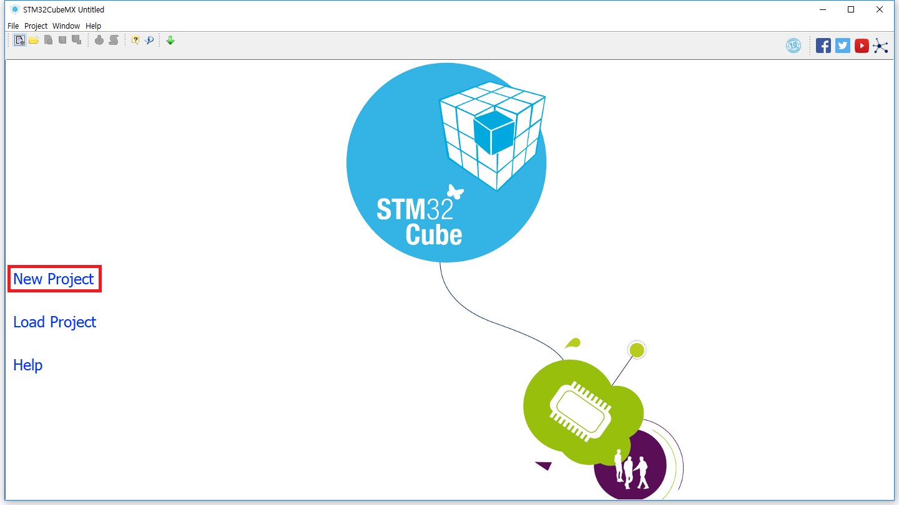
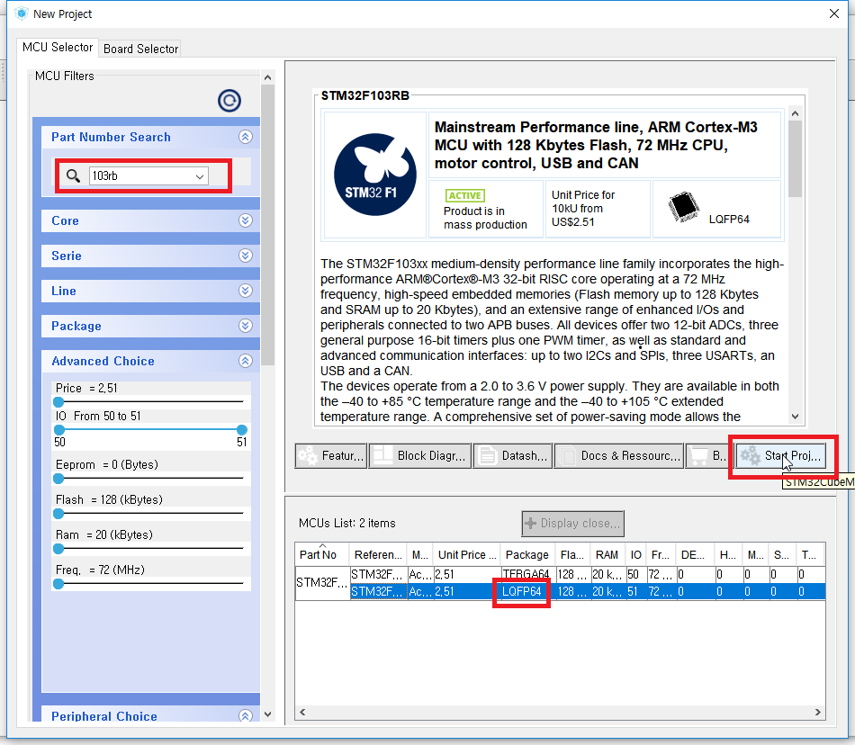
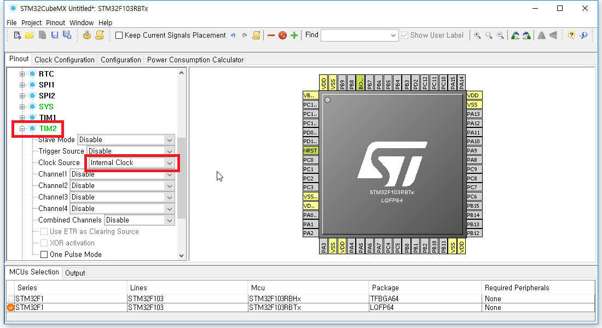
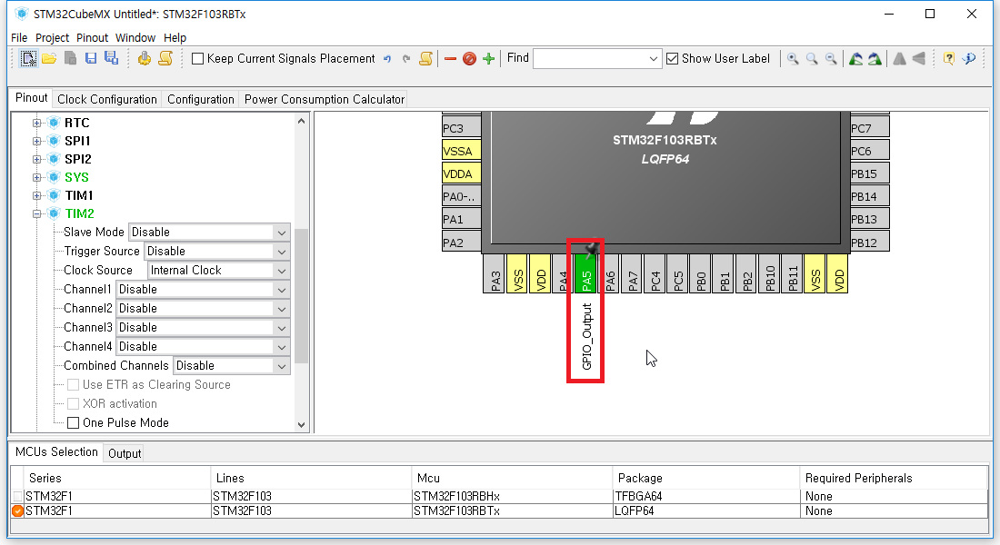
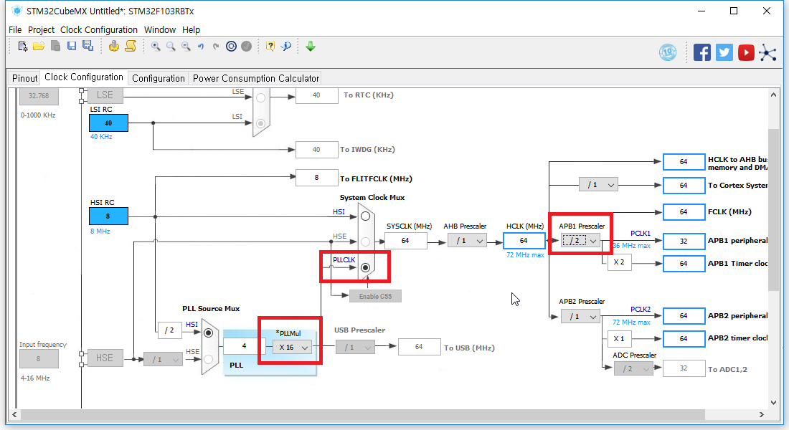
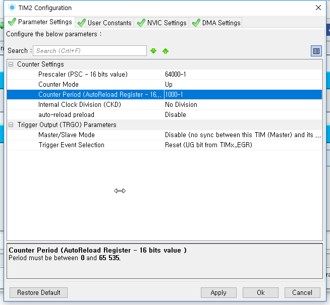
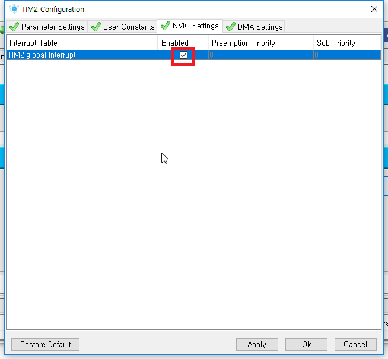
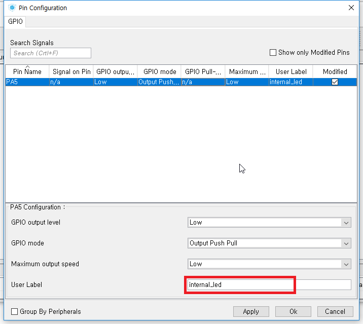
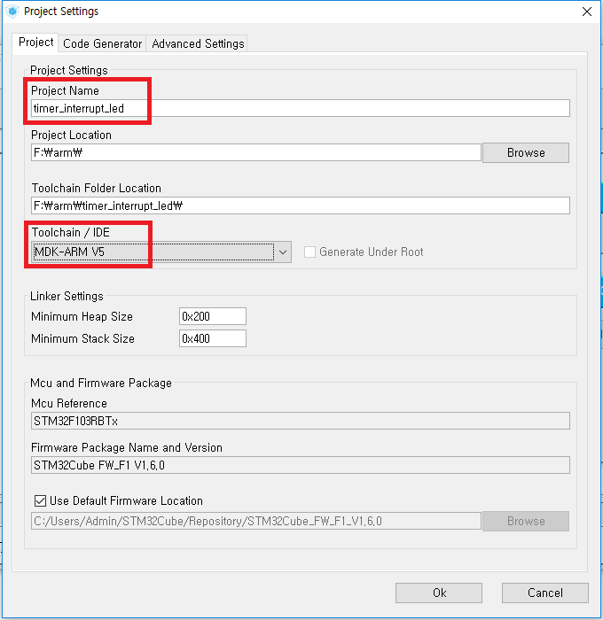

타이머 인터럽트 - Timer Interrupt
Timer Interrupt 기능을 사용해 보도록 하겠습니다.
Interrupt는 말 그대로 무언가를 중단하고 실행하는 것을 말합니다.
주로 예외상황이 발생했을 때 우선적으로 작업을 처리하기 위해 사용하는 기능입니다.
타이머 인터럽트(Timer Interrupt)는 타이머에 의해 작동되는 인터럽트입니다.
STM32Cube
새로 파일을 만들어 줍니다.

103rb 라고 검색한 뒤 LQFP64를 선택하고 Start Project를 눌러줍니다.

TIM2의 Clock Source를 Internal Clock으로 설정해 줍니다.

PA5를 GPIO_Output으로 설정해 줍니다.

Clock Configuration으로 이동하여 PLLCLK, PLLMul, APB1 Prescaler를 설정해 줍니다.

Configuration으로 이동하여 Control-TIM2를 눌러줍니다.
TIM2 Configuration 창에서 Parameter Settings를 아래와 같이 설정해 줍니다.
Prescaler는 클럭 그대로 사용하면 너무 빠르기에 나누어서 사용할 횟수를 지정하는 부분입니다.
Counter Period는 클럭이 몇번 발생했을 때 인터럽트를 실행할 지 결정하는 부분입니다.
-1을 해준 이유는 0에서부터 시작하기 때문에 1을 빼준 것입니다.

클럭을 분주비 64000으로 나눠주었으므로 64000000(64MHz) / 64000 = 1000Hz, 0.001초마다 클럭이 발생합니다.
클럭이 1000번 발생할 때 마다 인터럽트가 실행되므로 1초마다 인터럽트가 실행되는 것입니다.
NVIC로 이동하여 인터럽트를 사용하기 위해 Enabled에 체크해 줍니다.

System-GPIO를 클릭하여 PA5의 User Label을 internal_led로 설정해 줍니다.

이제 톱니바퀴를 눌러 코드를 생성해 줍니다.
Project Name을 써준 뒤 Toolchain / IDE를 MDK-ARM V5로 설정해 줍니다.

OK를 누르면 코드를 생성해 줍니다.
Open Project를 눌러 uVision5를 실행해 줍니다.
uVision5
Application/User의 main.c로 이동해서 타이머 인터럽트를 실행해 줍니다.
/* USER CODE BEGIN 2 */
HAL_TIM_Base_Start_IT(&htim2) ;
/* USER CODE END 2 */
같은 Application/User 안에 stm32f1xx_it.c 파일이 있습니다.
이쪽으로 이동해서 쭉 내리면 190번째 줄에 IRQHander를 찾아줍니다.
void TIM2_IRQHandler(void)
IRQHander 안에 TogglePin을 설치해 줍니다.
/* USER CODE BEGIN TIM2_IRQn 1 */
HAL_GPIO_TogglePin(internal_led_GPIO_Port, internal_led_Pin) ;
/* USER CODE END TIM2_IRQn 1 */
여기까지 완료되었다면 F7(Build) - F8(Download)를 눌러 다운로드해 줍니다.
보드의 LED가 1초간격으로 점멸하는지 확인합니다.